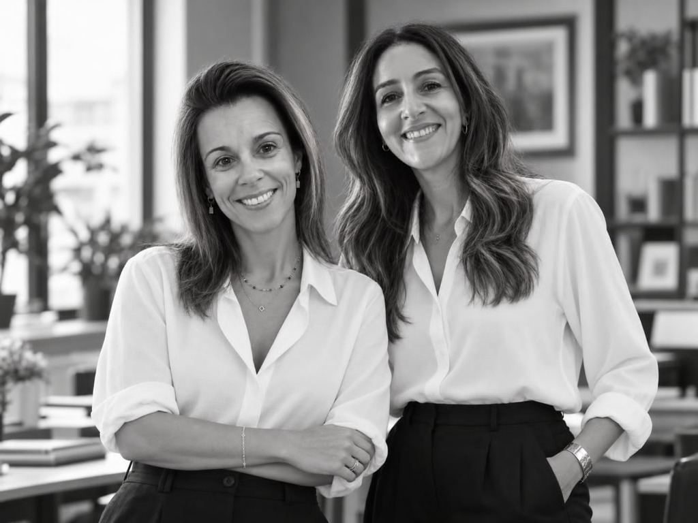
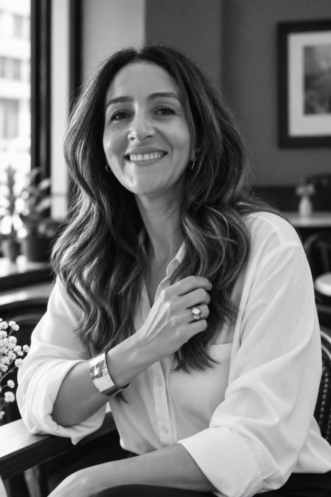

Diagnosticar
Identificamos riscos, avaliamos processos e definimos prioridades de melhoria.
O que recebe
Relatório de diagnóstico, matriz de riscos e plano inicial de ações.
Apoiamos organizações na identificação de riscos, melhoria de processos e reforço dos mecanismos de controlo, através de soluções de auditoria e consultoria ajustadas à sua realidade.


Da identificação de riscos à melhoria dos processos e monitorização do desempenho, oferecemos soluções adaptadas às necessidades e aos objetivos de cada organização.
Identificamos riscos, avaliamos processos e definimos prioridades de melhoria.
O que recebe
Relatório de diagnóstico, matriz de riscos e plano inicial de ações.
Apoiamos a organização de processos, procedimentos e mecanismos de controlo.
O que recebe
Plano de melhoria, documentação e instrumentos de controlo.
Acompanhamos indicadores, analisamos desvios e apoiamos decisões de gestão.
O que recebe
Dashboard, relatórios periódicos e acompanhamento.
Acreditamos que uma auditoria deve ir além da identificação de fragilidades. O verdadeiro valor está em compreender os processos, reconhecer os riscos e propor melhorias concretas, ajustadas à realidade de cada organização.
Trabalhamos em proximidade com os nossos clientes, combinando rigor técnico, análise fundamentada e soluções orientadas para resultados.
Conheça a nossa metodologiaAvaliações fundamentadas em critérios objetivos, evidências e princípios éticos.
Compreendemos a realidade e os desafios de cada organização, privilegiando uma relação de confiança.
Apresentamos recomendações claras, proporcionais e exequíveis, com prioridades definidas.
Protegemos a informação disponibilizada e respeitamos os deveres de reserva e proteção de dados.
Conte-nos o que a sua empresa procura. Vamos explorar como uma auditoria interna independente pode ajudar.
Trabalhamos com uma metodologia estruturada, adaptada à realidade de cada organização. Da identificação de riscos à monitorização dos resultados, privilegiamos a análise fundamentada, a definição de prioridades e o acompanhamento das melhorias.
Conhecemos a organização, analisamos documentos e processos, ouvimos os intervenientes e identificamos necessidades, riscos e fragilidades.
Avaliamos os mecanismos de controlo existentes e definimos recomendações e prioridades, organizadas num plano de ação com responsáveis e prazos.
Apoiamos a estruturação de procedimentos, instrumentos de controlo e medidas de melhoria adequadas à realidade da organização.
Acompanhamos as ações acordadas, verificamos evidências de execução e avaliamos a eficácia das medidas implementadas.
Analisamos indicadores, comunicamos os resultados e identificamos oportunidades para novos ciclos de melhoria.
Cada projeto é definido em função das necessidades, dimensão e complexidade da organização. As fases e os entregáveis são ajustados ao âmbito contratado, não sendo obrigatória a realização de todas as etapas.
A AR/CC apoia a análise, o planeamento e o acompanhamento das melhorias. A aprovação das decisões e a execução operacional permanecem sob responsabilidade da organização cliente.
Partilhe connosco os seus desafios e conheça a abordagem mais adequada às suas necessidades.
A AR/CC nasce da iniciativa de Andreia Rocha e Cláudia Coimbra, duas profissionais com percursos na área da saúde, da auditoria e da qualidade, unidas por uma visão comum: ajudar as organizações a trabalhar de forma mais eficiente, segura e estruturada.
Aliamos experiência profissional, rigor na análise e uma abordagem próxima, procurando transformar riscos e oportunidades identificados em recomendações claras e soluções ajustadas à realidade de cada cliente.


Mestre em Gestão e Economia de Serviços de Saúde, com formação pós-graduada em gestão de organizações e serviços de saúde.
Com experiência em auditoria interna desde 2017, coordena atualmente um Gabinete de Auditoria Interna, desenvolvendo atividade nas áreas de auditoria baseada no risco, controlo interno, conformidade normativa e acompanhamento de recomendações.
Possui ainda competências em gestão de riscos, governação, sistemas de gestão da qualidade e análise de dados, incluindo Business Intelligence e Power BI.
Licenciada em Enfermagem, com mais de 20 anos de experiência profissional em contexto hospitalar e investigação clínica, entre outras áreas de atuação.
Integra estruturas institucionais dedicadas à qualidade e segurança dos cuidados, participando em auditorias a processos clínicos, análise de indicadores, identificação de áreas de melhoria e acompanhamento de medidas corretivas.
A sua experiência em investigação clínica inclui o cumprimento de protocolos e requisitos de qualidade, com especial atenção ao rigor documental e à rastreabilidade da informação.
Atualmente, frequenta o Mestrado em Enfermagem de Reabilitação e desenvolve competências na área da auditoria e gestão da qualidade.
Apoiar as organizações na melhoria do seu desempenho, dos sistemas de gestão e do controlo de riscos, através de serviços de consultoria e auditoria rigorosos, adaptados à sua realidade e orientados para resultados.
Ser uma empresa reconhecida pela competência técnica, confiança e capacidade de acompanhar a evolução das organizações e os desafios da transformação tecnológica.
Analisar. Melhorar. Evoluir.